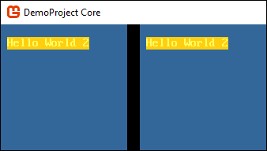
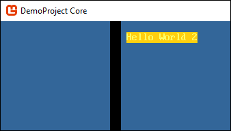
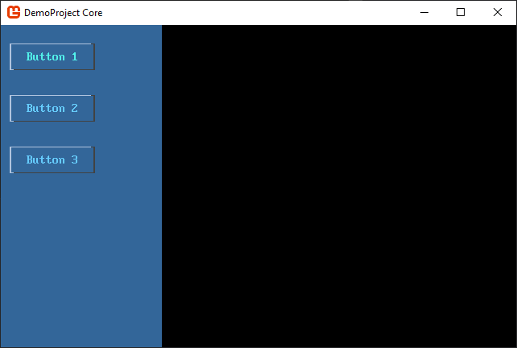

How the control theme system works
SadConsole comes with a default theme that all controls use. This is accessed through the static Default property. When a ControlsConsole or Window is created, the Library.Default theme is automatically referenced. Therefore, all ControlsConsole and Window objects share a common theme.
A theme library contains three main parts:
- A definition of Colors.
- A theme for
ControlsConsoleandWindow. - A theme for every type of control.
Host console
The ControlsConsole and Window type both have a Theme property which, unless changed, points to the shared Default library.
Note
While the ControlsConsole is mostly talked about, everything applies to the Window type since it is derived from ControlsConsole.
The ControlsConsole has an Invalidate() which is in charge of drawing the theme on the console. This is called in two places, when the console is first created and when the theme is set to a different theme. The invalidate method draws the theme on the console, tells each control to refresh its theme, and marks every control as dirty so they will be redrawn.
This works different from a normal Console. A normal Console always keeps whatever you draw to it. Unless you erase it, it's there forever. Printing or editing a ControlsConsole directly is not recommended as the theme of the ControlsConsole would erase whatever work you did on the console. If you want to do a custom design on a ControlsConsole you have two options:
Override the
Invalidatemethod.If you override
Invalidateand provide your own drawing code, you effectively disable the theme drawing on the console. You can still callbase.Invalidate()first though to ensure that the current theme draws, and after that, draw what you want.Create a new theme.
If you create a new ControlsConsoleTheme or new WindowTheme class, you can customize the drawing of the console however you want. Then replace the theme's ControlsConsoleTheme or WindowTheme property.
Remember, if you change any theme on the Default instance (which a console points to unless you set a different library) it will apply to all controls and consoles.
Here are some examples.
Invalidate
The Invalidate() method provides a quick-and-easy way for you to extend the current theme. For example, this code still calls base.Invalidate() to draw the current theme, but then prints on top of that using the theme's colors.
class MyConsole : SadConsole.ControlsConsole
{
public MyConsole(int width, int height) : base(width, height) { }
public override void Invalidate()
{
base.Invalidate();
Print(1, 1, "Hello World", Theme.Colors.Green, Theme.Colors.GreenDark);
}
}
// code to show the console
Global.CurrentScreen = new MyConsole(20, 10);

Note that the blue background of the console displayed above was taken from the theme, and automatically applied by the theme.
Theme
You can create a new theme and apply it to the library that the console uses. If the console does not use a custom library, then the theme would be applied to all consoles. For example, let's create a new SadConsole.Themes.ControlsConsoleTheme object.
class MyTheme: SadConsole.Themes.ControlsConsoleTheme
{
Cell CustomPrintStyle;
public override void RefreshTheme(Colors themeColors)
{
base.RefreshTheme(themeColors);
CustomPrintStyle = new Cell(themeColors.Yellow, themeColors.YellowDark);
}
public override void Draw(ControlsConsole console, CellSurface hostSurface)
{
// Use the existing theme's drawing which clears the console with the FillStyle property
base.Draw(console, hostSurface);
hostSurface.Print(1, 1, "Hello World 2", CustomPrintStyle);
}
}
The theme itself can't access the parent library and retrieve the colors. When the colors change, the RefreshTheme method is called on the theme. This is where you build the theme's custom settings. The ControlsConsoleTheme base class has a FillStyle property that clears and fills the console when the theme is drawn. That base.RefreshTheme(themeColors) call makes sure that FillStyle property is still built properly. And so our custom theme follows the same design, we built a new visual style CustomPrintStyle based on the colors provided.
Next we need to set this theme on a console. We can globally set the theme at the start of SadConsole, which means every ControlsConsole created will use this new theme:
SadConsole.Themes.Library.Default.ControlsConsoleTheme = new MyTheme();
SadConsole.Themes.Library.Default.ControlsConsoleTheme.RefreshTheme(SadConsole.Themes.Library.Default.Colors);
Global.CurrentScreen = new ContainerConsole();
Global.CurrentScreen.Children.Add(new ControlsConsole(20, 10) { Position = new Point(0, 0) });
Global.CurrentScreen.Children.Add(new ControlsConsole(20, 10) { Position = new Point(22, 0) });
The above code created two new ControlsConsole objects, didn't touch any theme related properties or settings on those consoles, but the consoles still used the new theme. This is because we applied the theme at a global elvel through the Library.Default object.

But instead of changing all consoles, you may just want to change a single console. In this case you need to apply a whole new library instance to the console. You can easily clone the existing library and change it.
var library = SadConsole.Themes.Library.Default.Clone();
library.ControlsConsoleTheme = new MyTheme();
library.ControlsConsoleTheme.RefreshTheme(SadConsole.Themes.Library.Default.Colors);
Global.CurrentScreen = new ContainerConsole();
Global.CurrentScreen.Children.Add(new ControlsConsole(20, 10) { Position = new Point(0, 0) });
Global.CurrentScreen.Children.Add(new ControlsConsole(20, 10) { Position = new Point(22, 0), Theme = library });
The above code cloned the existing default library and changed the ControlsConsoleTheme property to our new theme. Two consoles were created but one (by default) uses the Library.Default theme while the second used our custom library which has our custom theme on it.

Controls
Control themes operate very similarly to the host console themes. The difference though is that if the theme is not explicitly set on the control, it asks the parent host console for the theme. If there is no parent, like when you first create a control, then the control looks at the Library.Default for a theme.
The SadConsole.Themes namespace contains a theme object for each control defined by SadConsole. And each theme type uses a common base class, SadConsole.Themes.ThemeBase which inherits from SadConsole.Themes.ThemeStates. The ThemeStates class provides a cell template for each state a control can be put into. Usually the state of the control is set by interacting with it, like focusing, moving the mouse over it, and clicking. ThemeBase, on the other hand, provides logic that every control theme uses:
When a control is added to a console
- Signal the theme of the control that it has been attached to a control.
- Refresh the theme state.
When a custom theme is added to a control directly
- Signal the theme of the control that it has been attached to a control.
- Refresh the theme state.
Lets use an example console that has three buttons. In this example, we'll clone the default library and assign it to the console.
var console = new SadConsole.ControlsConsole(25, 25);
var consoleTheme = SadConsole.Themes.Library.Default.Clone();
console.Theme = consoleTheme;
console.Add(
new SadConsole.Controls.Button(14, 3)
{
Position = new Point(1, 1),
Text = "Button 1"
}
);
console.Add(
new SadConsole.Controls.Button(14, 3)
{
Position = new Point(1, 5),
Text = "Button 2"
}
);
console.Add(
new SadConsole.Controls.Button(14, 3)
{
Position = new Point(1, 9),
Text = "Button 3"
}
);
Global.CurrentScreen = console;

Those three buttons get their theme from the parent console. If you change that theme, all buttons will use the new theme. This code is the same as before except that the button theme for the new library instance has been changed. Now, all buttons on this console look different.
var console = new SadConsole.ControlsConsole(25, 25);
var consoleTheme = SadConsole.Themes.Library.Default.Clone();
consoleTheme.ButtonTheme = new SadConsole.Themes.ButtonLinesTheme();
console.Theme = consoleTheme;
// code to create 3 buttons removed to save space
Global.CurrentScreen = console;

However, if the theme you want to change (button in this case) has some settings, you can create a new version of that theme and apply it to a button.
A lot of the time you want to change the theme of a single button. Instead of using a custom library that changes the theme of all instance of the control, you can adjust a single button. Alter the "Button 2" button from the previous code to change the theme.
console.Add(
new SadConsole.Controls.Button(14, 3)
{
Position = new Point(1, 5),
Text = "Button 2",
Theme = new SadConsole.Themes.Button3dTheme()
}
);

Colors
Colors are just a property of a theme library that can be altered. All controls use some basic appearance settings by default, and these are defined on a SadConsole.Themes.Colors object. Controls have states which correspond to the Appearance* properties on the colors object.
| Property | State | Made from |
|---|---|---|
| Appearance_ControlNormal | Normal | Foreground Text Background ControlBack |
| Appearance_ControlDisabled | Disabled | Foreground TextLight Background ControlBackDark |
| Appearance_ControlOver | Mouse Over | Foreground TextSelectedDark Background ControlBackSelected |
| Appearance_ControlSelected | Selected item (like in listbox) | Foreground TextSelected Background ControlBackSelected |
| Appearance_ControlMouseDown | Mouse button down | Foreground ControlBackSelected Background TextSelected |
| Appearance_ControlFocused | Normal and focused | Foreground TextFocused Background ControlBackLight |
By changing the base color definitions (such as Text) and calling SadConsole.Themes.Colors.RebuildAppearances(), all of the Appearance* values will be rebuilt. Any controls that are created after this, or those that need to be redrawn, would use the new color values.